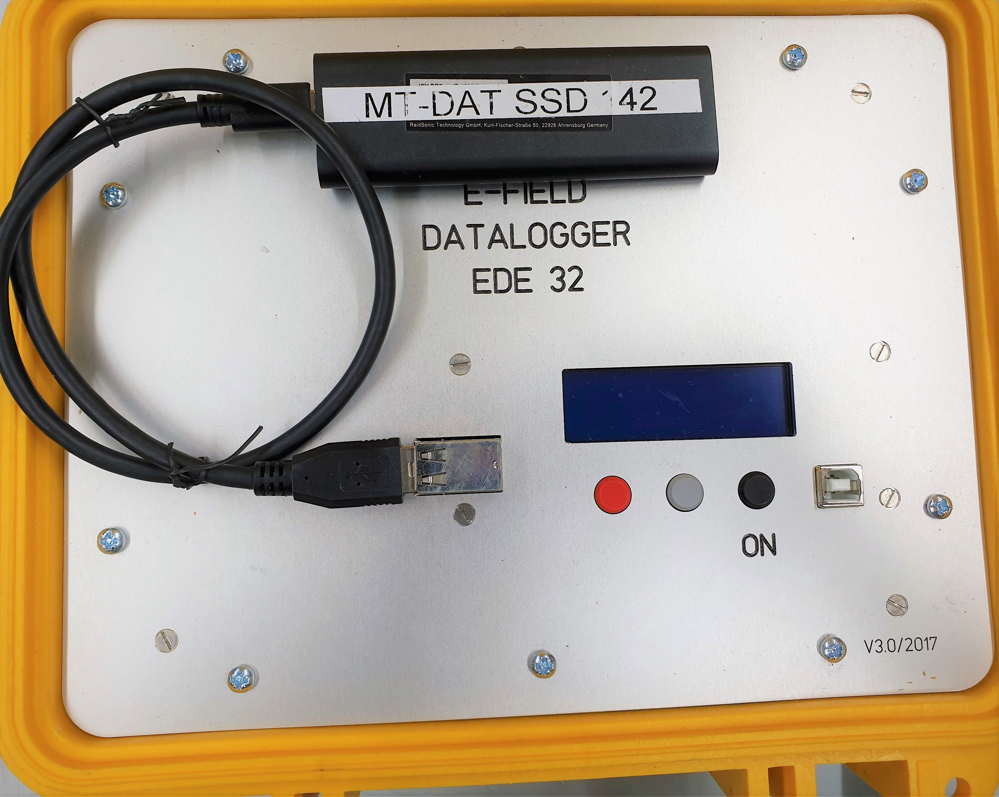
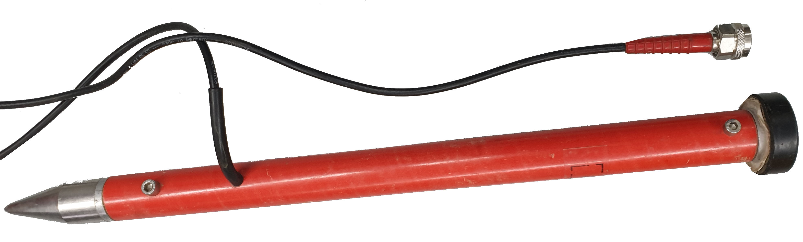
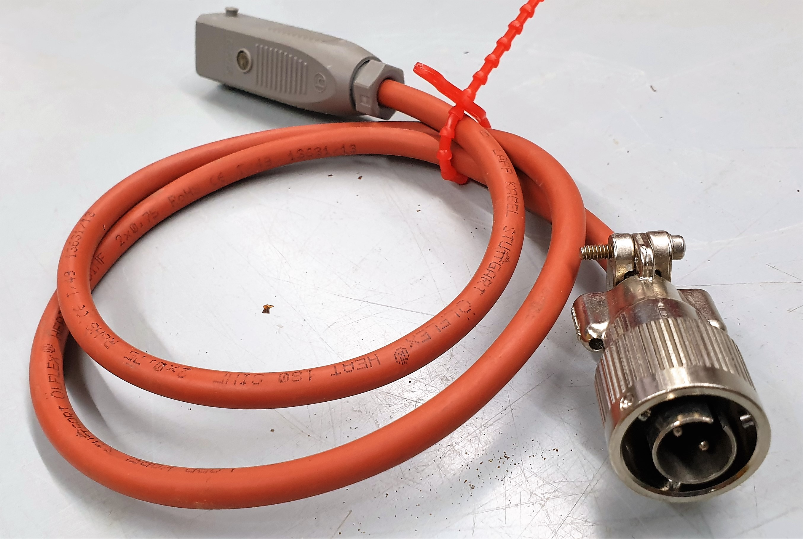
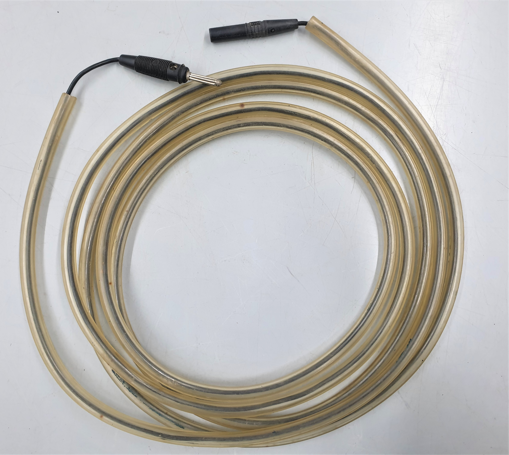
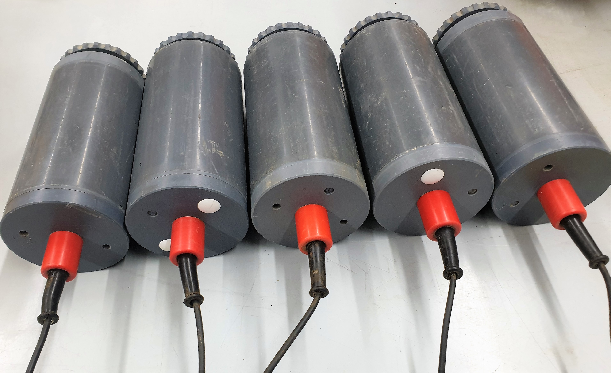
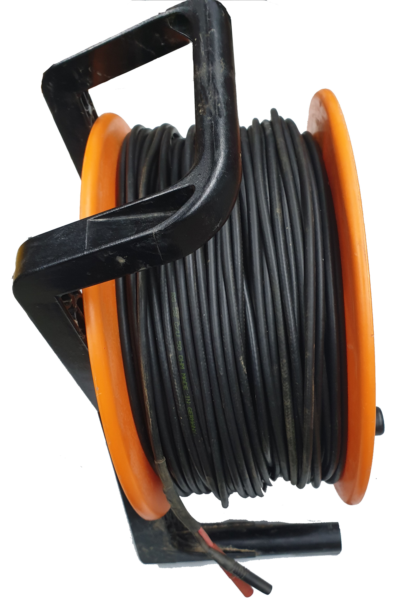
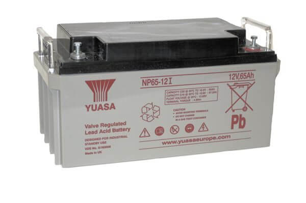
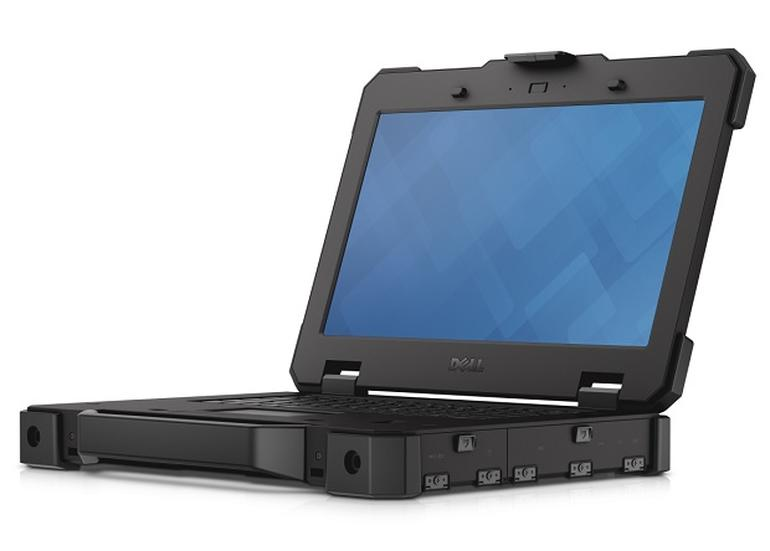

Field installation¶
To install the EDE telluric station, a few of components are required to do so.
Requirements¶
EDE unit |

|
GPS antenna |

|
Power cable |

|
Ground cable |

|
5 x electric field electrodes |

|
4 x electric field cables |

|
12V battery |

|
Laptop (Not required in Manual mode) |

|
Note
The following steps assumes that the user had successfully buried the electrodes and connected all the cables to the EDE.
Automatic Mode¶
Warning
The following tuturial has been carried out using software version 6.31. Menus can look slightly different in other versions.
1. Make a job list file¶
In order to use the automatic mode or the EDE the user must provide an ASCII file contains the desired recording parameters for all jobs similar to the following example (without comments).
Ex 500 cm // Ex dipole length in cm
Ey 500 cm // Ey dipole length in cm
4096 2020 08 24 07 21 00 2020 08 24 08 21 00 // Job1 // Freq StartDate StartTime StopDate StopTime
4096 2020 08 24 08 23 00 2020 08 27 09 23 00 // Job2 // Freq StartDate StartTime StopDate StopTime
512 2020 08 27 09 25 00 2020 08 31 10 25 00 // Job3 // Freq StartDate StartTime StopDate StopTime
256 2020 08 31 10 27 00 2020 08 31 11 27 00 // Job4 // Freq StartDate StartTime StopDate StopTime
1024 2020 09 30 11 29 00 2020 09 30 12 29 00 // Job5 // Freq StartDate StartTime StopDate StopTime
512 2020 09 30 12 31 00 2020 10 30 13 31 00 // Job6 // Freq StartDate StartTime StopDate StopTime
This ASCII file can be either created using EDE Job list Editor or created maunaly with any text editor as long it meets the following criteria:
Name must be
auto_init.cfg.Path must be to the root directory of the data partition i.e.
MTDAT_139.Time between jobs must be
>= 2 minutes.Spaces between parameters must be
one space only.
2. Turn on the EDE¶
Most EDEs start on immediately after plugging in the power source, if the system doesnt start press ON button. Then you will be promoted with a greeting screen as follows.
{kind=link}
3. Select Automatik mode¶
After system boots up, the EDE will show a screen to let the user choose recording mode. In automatic mode, pressing the middle/OK button is the only interaction required from the user to start recording.
{kind=link}
3. Wait for GPS synchronization¶
Hint
Although the user is not required to interact with the unit from this step forward, it is recommended to wait for GPS sync and the joblist check up before leaving the station unattended.
The EDE will not start recording unless it acquires an accurate GPS synchronization. This process time range is inconsistent which means it can be finished very quickly in less than couple of minutes or very slowly and takes more than 30 minutes. The following image shows the GPS sync steps where the unit internal clock uses RTC then GPS and finally UTC.
{kind=link}
4. Wait for Job list check up¶
As soon as the EDE GPS is synchronized, the system start a final jobs check before start recording. The system checks the time and format of the jobs inside auto_init.cfg and determine which jobs will be started
and which will be neglected.
{kind=link}
5. Recording screen¶
After the job check, the EDE will show the following recording screen which indicates that the system is wiating for the time of next job to start or will start immediately if the start time is in the past while the stop time is still in the future.
{kind=link}
Manual Mode¶
1. Turn on the EDE¶
Most EDEs start on immediately after plugging in the power source, if the system doesnt start press ON button. Then you will be promoted with a greeting screen as follows.
Example of EDE first screen showing serial number and version number¶
2. Select Manual mode¶
After system boots up, the EDE will show a screen to let the user choose recording mode.
Mode selection screen¶
3. Wait for GPS synchronization¶
The EDE will not start recording unless it acquires an accurate GPS synchronization. This process time range is inconsistent which means it can be finished very quickly in less than couple of minutes or very slowly and takes more than 30 minutes. The following image shows the GPS sync steps where the unit internal clock uses RTC then GPS and finally UTC.
GPS synchronization steps¶
4. Connect USB stick¶
From this point it is required to plug in the SSD to the USB socket in order to read/write initial configuration parameters. Insert the SSD and press OK
{kind=link}
5. Select sampling frequency¶
According to the type of EDE (LF or HF) the sampling frequencies may differ but the selection process is still the same, toggle right or left till you reach the desired sampling frequency and press OK.
{kind=link}
6. Select dipole lengths¶
Toggle right or left till you reach the desired dipole length for N-S and E-W dipoles and press OK
{kind=link}
{kind=link}